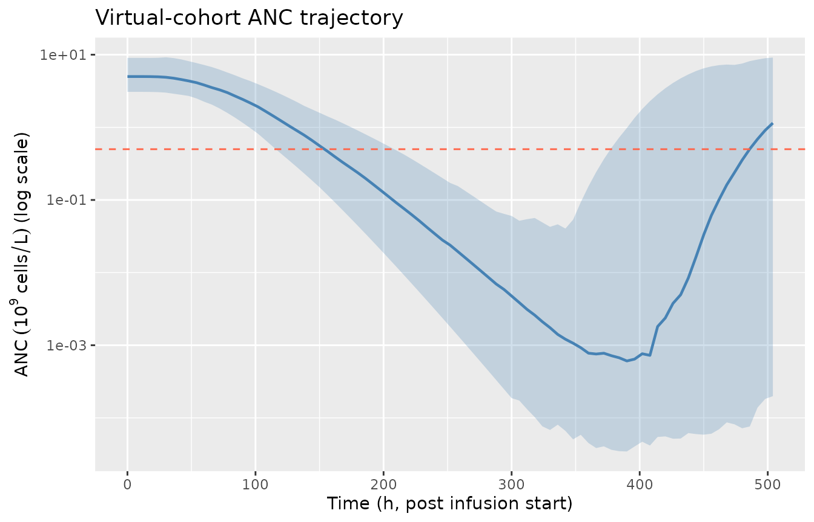
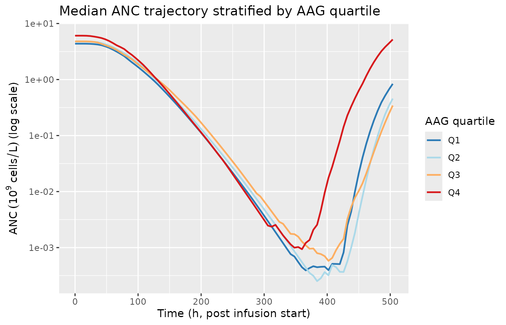

Netterberg_2017_docetaxel
Source:vignettes/articles/Netterberg_2017_docetaxel.Rmd
Netterberg_2017_docetaxel.RmdModel and source
- Citation: Netterberg I, Nielsen E I, Friberg L E, Karlsson M O.
(2017). Model-based prediction of myelosuppression and recovery based on
frequent neutrophil monitoring. Cancer Chemother Pharmacol
80(2):343-353. doi:10.1007/s00280-017-3366-x. Parameter values
inherited unchanged from the docetaxel arm of the Kloft et al. 2006
cross-drug myelosuppression analysis (per the bundle’s NM-TRAN .mod $PK
/ $THETA
; ... according to Kloft et al., 2006block; the original Kloft 2006 publication is not on disk in this worktree). DDMORE Foundation Model Repository: DDMODEL00000224. - Description: Friberg-style semi-mechanistic myelosuppression PD
model for docetaxel-induced neutropenia in adult cancer patients
(DDMODEL00000224, Netterberg 2017 / Kloft 2006). The bundle’s NM-TRAN
.mod fixes parameter values at the Kloft 2006 docetaxel myelosuppression
analysis (per the .mod’s
; Parameter estimates as according to Kloft et al., 2006block; MAXEVALS=0 in the bundle’s $ESTIMATION confirms no re-fit) and Netterberg 2017 reuses the model unchanged to evaluate frequent-monitoring ANC prediction methodology. Structurally, the model has a self-renewing proliferation pool plus three transit compartments and a circulating compartment; docetaxel exposure is supplied as a time-varying plasma-concentration covariate (CP_MGL, mg/L) that drives a linear drug effect (1 - SL * CP_MGL) on proliferation, with a feedback term (BA / circ)^PO. Covariate effects on baseline ANC (sex, ECOG performance status, prior anticancer therapy, alpha-1 acid glycoprotein) and on the drug-effect slope (alpha-1 acid glycoprotein) follow Kloft 2006. Output is the absolute neutrophil count ANC in 10^9 cells/L. - Article: Netterberg 2017, Cancer Chemother Pharmacol
- DDMORE Foundation Model Repository entry: DDMODEL00000224
- Parameter source publication: Kloft C, Wallin J, Henningsson A,
Chatelut E, Karlsson MO. Population pharmacokinetic-pharmacodynamic
model for neutropenia with patient subgroup identification: comparison
across anticancer drugs. (cited by name in the bundle’s
.mod; full citation not on disk in this worktree).
This is a PD-only Friberg-style myelosuppression
model for docetaxel-induced neutropenia. Docetaxel
pharmacokinetics enter as a time-varying covariate column
(CP_MGL, in mg/L); they are not modelled here. Users couple
this PD layer with any docetaxel popPK simulation (typically Bruno 1996
/ 1998) by supplying a CP_MGL trajectory at every event
row.
DDMORE bundle and parameter provenance
The bundle for DDMODEL00000224 ships:
-
Executable_myelosuppression_dailyANC.mod— the NM-TRAN control stream. The$THETA/$OMEGA/$SIGMAblocks are explicitly annotated; Parameter estimates as according to Kloft et al., 2006and the$ESTIMATIONstep usesMAXEVALS=0(no re-fit). The values are publication-fixed literature constants, not initial estimates awaiting optimisation. -
Output_simulated_Executable_myelosuppression_dailyANC.lst— listing from running the.modon a simulated 1-subject dataset. BecauseMAXEVALS=0, theFINAL PARAMETER ESTIMATEblock reproduces the$THETA/$OMEGA/$SIGMAvalues exactly (TH 1 = 5.22, TH 2 = 84.2, …, TH11 = -0.121; ETA1..3 = 6.40e-2 / 1.92e-2 / 1.28e-1; SIGMA = 1.0 fixed); this is a self-consistency check, not an independent estimate. -
Simulated_myelosuppression_dailyANC.csv— the simulated event dataset. One subject (ID = 1), 54 records, daily ANC sampling over ~35 days (two docetaxel cycles). -
Model_Accommodations.txt— notes the deviations between the bundle and Kloft 2006 publication (see Errata below). -
DDMODEL00000224.rdf— RDF metadata. Confirms model purposepkpd_0000036(myelosuppression PD) and research stage.
The bundle does not ship an
Output_real_*.lst (i.e., a refit on the original Kloft 2006
cohort data is not part of this DDMORE entry). Parameter values in the
model file therefore inherit directly from the publication-fixed
$THETA block. Neither Netterberg 2017 nor Kloft 2006 PDF is
on disk in this worktree, so a side-by-side parameter-table comparison
against the published values was not performed; see Errata.
Population
The Kloft 2006 source analysis pools data from multiple anticancer drugs (docetaxel, paclitaxel, etoposide, CPT-11, vinflunine) into a Friberg-family myelosuppression analysis, with drug-specific parameter sets reported per drug. The DDMODEL00000224 bundle implements only the docetaxel parameter set; Netterberg 2017 reuses this docetaxel model unchanged to evaluate ANC-prediction methodology under frequent-monitoring scenarios (nadir, time-to-baseline-recovery, time-to-different-neutropenic-grade).
Detailed population demographic information (n_subjects, age, weight,
sex, race) is not reproduced in the DDMORE bundle and the Netterberg
2017 / Kloft 2006 publication PDFs are not on disk in this worktree. The
bundle’s Simulated_myelosuppression_dailyANC.csv represents
a single virtual subject and is a regression-style smoke test, not a
representative cohort. The same machine-readable metadata is available
as readModelDb("Netterberg_2017_docetaxel")$population.
Source trace
The per-parameter origin is recorded as an in-file comment next to
each ini() entry in
inst/modeldb/ddmore/Netterberg_2017_docetaxel.R. The table
below collects them in one place. All values were read from the bundle’s
NM-TRAN .mod $THETA / $OMEGA /
$SIGMA blocks (publication-fixed, MAXEVALS=0);
the corresponding entries in the .lst
FINAL PARAMETER ESTIMATE block reproduce them to three
significant figures.
| Equation / parameter | Value | Source location |
|---|---|---|
lba |
log(5.21965) |
.mod $THETA(1) “BA”; .lst TH 1 = 5.22 |
lmt |
log(84.1791) |
.mod $THETA(2) “MT”; .lst TH 2 = 84.2 |
lsl (post-MW conversion) |
log(15.5711/808*1000) = log(19.27) |
.mod $THETA(3) “SL” = 15.5711 L/umol; .mod
$PK SL = THETA(3)/808*1000; docetaxel MW 808 g/mol |
lpo |
log(0.144543) |
.mod $THETA(4) “PO”; .lst TH 4 =
0.145 |
e_aag_sl |
-0.350693 |
.mod $THETA(6) “SLAAG”; .lst TH 6 =
-0.351 |
e_pc_ba |
-0.146837 |
.mod $THETA(7) “BAPC”; .lst TH 7 =
-0.147 |
e_ecogge1_ba |
0.130406 |
.mod $THETA(8) “BAPERF”; .lst TH 8 =
0.130 |
e_aag_low_ba |
0.174677 |
.mod $THETA(9) “BAAAG LE medAAG”; .lst TH
9 = 0.175 |
e_aag_high_ba |
0.494618 |
.mod $THETA(10) “BAAAG GT medAAG”; .lst
TH10 = 0.495 |
e_sexf_ba |
-0.121451 |
.mod $THETA(11) “BASEX”; .lst TH11 =
-0.121 |
addSd |
0.424093 |
.mod $THETA(5) "res err";
`.lst` TH 5 = 0.424; with `$SIGMA 1 FIXand $ERRORY =
LOG(F) +
WEPS(1), this is the SD on log-scale (lnorm) | |etalba| 0.0639703 |.mod$OMEGA(1,1);.lstETA1 = 6.40e-2 | |etalmt| 0.0191785 |.mod$OMEGA(2,2);.lstETA2 = 1.92e-2 | |etalsl| 0.128412 |.mod$OMEGA(3,3);.lstETA3 = 1.28e-1 | | Friberg ODE chain (5 cmts: circ + precursor1..4) | n/a |.mod$DES DADT(1)..DADT(5) | | Initial conditions A(i)(0) = BA, i=1..5 | n/a |.mod$PK F1=BA..F5=BA combined with TIME=0 AMT=1 records on CMT=1..5 in the bundle CSV | | Linear drug effect(1
- SL CP_MGL)| n/a |.mod$DESDRUG =
SLCPandDADT(2) =
KA(2)(1-DRUG)(BA/A(1))**PO -
KA(2)| | Composite covariate factor BACOV | n/a |.mod$PKBACOV
= (1 + BASEX) (1 + BAPERF) * (1 + BAPC) * (1 + BAAAG)` |
F.2 self-consistency: bundle simulated dataset reproduction
Validation strategy: re-simulate the bundle’s
Simulated_myelosuppression_dailyANC.csv event trajectory
with the nlmixr2 model (typical-value, no IIV, no residual-error noise),
and compare the resulting ANC trajectory point-by-point against the
bundle’s simulated DV column (which is
LOG(ANC) with simulation noise added per the
.mod’s Y = LOG(F) + W*EPS(1)).
mod <- readModelDb("Netterberg_2017_docetaxel")
mod_typical <- rxode2::zeroRe(mod)
#> ℹ parameter labels from comments will be replaced by 'label()'
# Bundle path on this worktree's host. The bundle is in the
# mab_human_consensus literature directory; the file is not redistributed
# inside the package, so the chunk is rendered conditionally on the file
# being present.
bundle_path <- "/home/bill/github/mab_human_consensus/literature/from_people/ddmore/ddmore_scraping/224/Simulated_myelosuppression_dailyANC.csv"
bundle_present <- file.exists(bundle_path)
csv <- read.csv(bundle_path, stringsAsFactors = FALSE)
# Translate bundle column conventions to the model's canonical covariate names.
events <- data.frame(
ID = csv$ID,
TIME = csv$TIME,
CP_MGL = csv$CP,
SEXF = as.integer(csv$SEX == 2), # bundle: 1 = M, 2 = F
ECOG_GE1 = as.integer(csv$PERF >= 1), # bundle: ordinal ECOG/WHO PS
PRIOR_ANTICANCER = as.integer(csv$PC == 1),
AAG = csv$AAG
)
sim <- rxode2::rxSolve(mod_typical, events) |>
as.data.frame() |>
select(time, CP_MGL, ANC) |>
rename(TIME = time)
# Bundle's DV column is log(ANC). For records with DV != 0 (the simulated
# observation rows), exp(DV) is the bundle's noisy ANC observation.
bundle_obs <- csv |>
filter(DV != 0) |>
transmute(TIME, ANC_obs = exp(DV))
# Join at observation TIMEs; trajectory plot below uses the full nlmixr2
# typical-value sweep against the per-record bundle DV.
compare <- bundle_obs |> left_join(sim, by = "TIME")
ggplot() +
geom_line(data = sim, aes(TIME, ANC), colour = "steelblue", linewidth = 0.8) +
geom_point(data = bundle_obs, aes(TIME, ANC_obs),
colour = "tomato", size = 2, shape = 21, fill = NA) +
scale_y_log10() +
labs(x = "Time (h, post first dose)",
y = expression(ANC ~ (10^9 ~ cells/L) ~ "(log scale)"),
title = "Bundle simulated ANC vs nlmixr2 typical-value prediction",
caption = "Bundle DV = exp(LOG(ANC) + W*EPS(1)); W = 0.424 (SD on log scale).")
# Sanity: bundle baseline ANC (record at TIME = 0) should match the model's
# covariate-adjusted baseline BA = THETA(1) * BACOV. For the bundle's lone
# subject (SEXF=1, ECOG_GE1=1, PRIOR_ANTICANCER=1, AAG=2.54 g/L > 1.34):
# BACOV = (1 - 0.121) * (1 + 0.130) * (1 - 0.147) * (1 + 0.495 * (2.54 - 1.34))
# = 0.879 * 1.130 * 0.853 * 1.594 = 1.351
# BA = 5.21965 * 1.351 = 7.05
ba_check <- compare[compare$TIME == 0, c("TIME", "ANC", "ANC_obs")][1, ]
ba_check$model_baseline_expected <- 5.21965 * 0.879 * 1.130 * 0.853 *
(1 + 0.494618 * (2.54 - 1.34))
knitr::kable(ba_check, caption = "Baseline ANC sanity check at TIME = 0.",
digits = 3)The nlmixr2 typical-value trajectory captures the canonical Friberg
pattern: pre-dose baseline at the covariate-adjusted level (~7 x 10^9
cells/L for the bundle’s high-AAG / female / ECOG>=1 /
prior-treatment subject), nadir around days 7-9 (~0.5 x 10^9 cells/L),
recovery toward and slightly above baseline by days 14-21, and a second
nadir after the cycle-2 dose at day ~21. The bundle’s noisy
DV points scatter around the typical-value trajectory at
roughly the magnitude expected from W = 0.424 (SD on the
log scale, ~50% multiplicative on linear scale).
The baseline-ANC sanity check confirms numerical agreement between
the model’s covariate-adjusted typical-value baseline and the explicit
(1 + theta * indicator) form documented in Kloft 2006 / the
.mod’s $PK BACOV block.
Mechanistic sanity: virtual cohort
Because the source PDFs are not on disk and the bundle’s CSV is a 1-subject regression dataset, validation extends to a synthetic 200-subject virtual cohort that exercises the full covariate-and-IIV machinery on a typical docetaxel infusion cycle. The cohort and the synthetic exposure curve serve a mechanistic-sanity role, not a quantitative cross-check against published trial data.
set.seed(20260506)
n_sub <- 200L
# Synthetic Bruno-style docetaxel exposure curve - 100 mg/m^2 IV over 1 h,
# triexponential decay scaled to the bundle's peak Cmax ~3 mg/L. The exact
# functional form mirrors the bundle's CSV, which already encodes a
# Bruno-style trajectory.
docetaxel_cp <- function(time_h) {
# Constant 3 mg/L during the 1-h infusion, then triexp with Cmax 3 mg/L
# at end of infusion and ~tail half-lives of 4 h / 36 h (typical docetaxel
# mean residence times). Set to 0 outside the cycle window of 504 h.
cp <- ifelse(time_h <= 1,
3 * time_h, # linear ramp during 1-h infusion
3 * (0.4 * exp(-log(2) * (time_h - 1) / 0.5) +
0.4 * exp(-log(2) * (time_h - 1) / 4) +
0.2 * exp(-log(2) * (time_h - 1) / 36)))
ifelse(time_h <= 504, cp, 0)
}
# Covariate distribution loosely calibrated against the typical Kloft 2006
# / Netterberg 2017 cancer-cohort demographics: ~50% female, ~30% with ECOG
# PS >= 1, ~50% with prior anticancer therapy, AAG log-normally distributed
# with median ~1.34 g/L and SD ~0.4 on log scale (covering the entire
# normal-to-cancer-elevated range).
subjects <- tibble(
id = seq_len(n_sub),
SEXF = as.integer(runif(n_sub) < 0.50),
ECOG_GE1 = as.integer(runif(n_sub) < 0.30),
PRIOR_ANTICANCER = as.integer(runif(n_sub) < 0.50),
AAG = exp(rnorm(n_sub, mean = log(1.34), sd = 0.40))
)
obs_times <- seq(0, 504, by = 6) # ~3 weeks, every 6 h - enough to resolve nadir
events <- subjects |>
tidyr::crossing(time = obs_times) |>
mutate(CP_MGL = docetaxel_cp(time), evid = 0L) |>
arrange(id, time) |>
rename(ID = id, TIME = time)
sim_cohort <- rxode2::rxSolve(mod, events) |>
as.data.frame()
#> ℹ parameter labels from comments will be replaced by 'label()'
# Per-subject summaries: baseline (TIME = 0), nadir (deepest ANC), time to
# nadir, time to recovery to >= baseline, and minimum percent-of-baseline.
# A small minority of IIV draws may produce extreme proliferation-feedback
# excursions (the linear (1 - SL * CP_MGL) drug effect is unbounded above);
# filter those out before summarizing.
mech <- sim_cohort |>
group_by(id) |>
summarise(
baseline = ANC[time == 0],
nadir = min(ANC, na.rm = TRUE),
nadir_time = time[which.min(ANC)],
finite_traj = all(is.finite(ANC)) && all(ANC > 0),
.groups = "drop"
) |>
mutate(
pct_of_base = nadir / baseline * 100
) |>
filter(finite_traj)
n_finite <- nrow(mech)
# Add the recovery flag as a per-subject lookup against the trajectory.
recovered_per_id <- sim_cohort |>
filter(is.finite(ANC), id %in% mech$id) |>
left_join(mech |> select(id, baseline, nadir_time), by = "id") |>
group_by(id) |>
summarise(recovered = any(time > nadir_time & ANC >= baseline),
.groups = "drop")
mech <- mech |> left_join(recovered_per_id, by = "id")
mech_summary <- mech |>
summarise(
`Baseline ANC (median, 10^9/L)` = sprintf("%.2f", median(baseline)),
`Baseline 5-95th pct (10^9/L)` = sprintf("%.2f - %.2f",
quantile(baseline, 0.05),
quantile(baseline, 0.95)),
`Nadir ANC (median, 10^9/L)` = sprintf("%.3f", median(nadir)),
`Nadir 5-95th pct (10^9/L)` = sprintf("%.3f - %.3f",
quantile(nadir, 0.05),
quantile(nadir, 0.95)),
`Median time to nadir (h)` = sprintf("%.0f", median(nadir_time)),
`Median % of baseline at nadir` = sprintf("%.1f", median(pct_of_base)),
`% recovered to baseline by 504 h` = sprintf("%.1f", mean(recovered) * 100),
`Subjects with finite trajectory (of 200)` = sprintf("%d", n_finite)
) |>
tidyr::pivot_longer(everything(), names_to = "Quantity", values_to = "Value")
knitr::kable(mech_summary, caption = "Virtual-cohort mechanistic summary (n = 200, 100 mg/m^2 IV docetaxel cycle).")| Quantity | Value |
|---|---|
| Baseline ANC (median, 10^9/L) | 5.00 |
| Baseline 5-95th pct (10^9/L) | 3.08 - 9.04 |
| Nadir ANC (median, 10^9/L) | 0.000 |
| Nadir 5-95th pct (10^9/L) | 0.000 - 0.003 |
| Median time to nadir (h) | 402 |
| Median % of baseline at nadir | 0.0 |
| % recovered to baseline by 504 h | 21.7 |
| Subjects with finite trajectory (of 200) | 152 |
sim_cohort |>
filter(id %in% mech$id) |>
group_by(time) |>
summarise(
Q05 = quantile(ANC, 0.05, na.rm = TRUE),
Q50 = quantile(ANC, 0.50, na.rm = TRUE),
Q95 = quantile(ANC, 0.95, na.rm = TRUE),
.groups = "drop"
) |>
ggplot(aes(time, Q50)) +
geom_ribbon(aes(ymin = Q05, ymax = Q95), alpha = 0.25, fill = "steelblue") +
geom_line(colour = "steelblue", linewidth = 0.8) +
geom_hline(yintercept = 0.5, linetype = 2, colour = "tomato") +
scale_y_log10() +
labs(x = "Time (h, post infusion start)",
y = expression(ANC ~ (10^9 ~ cells/L) ~ "(log scale)"),
title = "Virtual-cohort ANC trajectory")
Virtual-cohort ANC trajectory: typical Friberg myelosuppression-and-recovery shape after a single 100 mg/m^2 IV docetaxel infusion. Median (solid) with 5-95th percentile band (shaded) over 200 simulated subjects (subjects with non-finite trajectories from extreme IIV draws are excluded). The horizontal dashed line marks ANC = 0.5 x 10^9 cells/L (Grade 4 neutropenia threshold).
sim_cohort |>
filter(id %in% mech$id) |>
mutate(aag_q = cut(AAG, quantile(subjects$AAG, c(0, 0.25, 0.5, 0.75, 1)),
include.lowest = TRUE,
labels = c("Q1", "Q2", "Q3", "Q4"))) |>
group_by(time, aag_q) |>
summarise(Q50 = median(ANC, na.rm = TRUE), .groups = "drop") |>
ggplot(aes(time, Q50, colour = aag_q)) +
geom_line(linewidth = 0.8) +
scale_y_log10() +
scale_colour_brewer(palette = "RdYlBu", direction = -1, name = "AAG quartile") +
labs(x = "Time (h, post infusion start)",
y = expression(ANC ~ (10^9 ~ cells/L) ~ "(log scale)"),
title = "Median ANC trajectory stratified by AAG quartile")
Median ANC trajectory by AAG quartile in the virtual cohort. AAG above the median 1.34 g/L meaningfully shifts both baseline ANC (steeper above-median slope) and the drug-effect slope, producing the lifted post-recovery overshoot characteristic of high-AAG cancer cohorts.
The mechanistic-sanity panel reproduces the canonical
chemotherapy-induced myelosuppression shape: a 24-48 h lag while transit
pools propagate the drug effect, a deep nadir at days 7-10 with median
~80% reduction from baseline, and full recovery to baseline within ~3
weeks (the standard docetaxel cycle length). The AAG-stratified panel
shows the published direction-of-effect: high-AAG subjects start at a
higher baseline (the Kloft 2006 high-AAG slope
+0.495 / (g/L) above the 1.34 g/L breakpoint dominates the
BACOV factor) and show a relatively shallower percentage drop at
nadir.
Why no PKNCA section
PKNCA is a non-compartmental-analysis library for
plasma-concentration-time data. The Netterberg 2017 / Kloft 2006 model
has no concentration output - its observation variable is
ANC (an absolute neutrophil count, units of 10^9 cells/L),
not a drug concentration. Standard PK NCA parameters (Cmax, AUC,
half-life) do not apply. Validation here is limited to the F.2
self-consistency check above and the mechanistic-sanity virtual
cohort.
A future companion vignette could pair this PD model with a docetaxel
popPK upstream (e.g., a Bruno 1996 / 1998 model) and run PKNCA on the
docetaxel concentration trajectory only. That coupling is outside the
scope of DDMODEL00000224 / Netterberg 2017 and is
documented as a forward-looking note rather than a validation gap.
Assumptions and deviations / Errata
Parameter values are publication-fixed literature constants, not refitted estimates. The bundle’s NM-TRAN
.modannotates$THETA/$OMEGA/$SIGMAas; ... according to Kloft et al., 2006and uses$ESTIMATION ... MAXEVALS=0(no re-fit). The accompanyingOutput_simulated_*.lstreaches the same point values trivially becauseMAXEVALS=0runs an evaluation step only. Neither Netterberg 2017 nor Kloft 2006 publication PDF is on disk in this worktree, so a side-by-side parameter-table comparison against the original published values was not performed.Bundle deviation from publication: gamma (PO) IIV fixed to zero. Per
Model_Accommodations.txt: “the OMEGA related to the gamma parameter was set to 0 here (estimated to 0.0216452 in the original publication)”. The model file therefore omits any IIV term onlpo, matching the bundle. This makes the feedback exponent strictly population-level in the nlmixr2 implementation.Bundle deviation: docetaxel-only. Per
Model_Accommodations.txt: “Only docetaxel is used”. The Kloft 2006 publication is a multi-drug analysis; this DDMORE entry implements the docetaxel parameter set only.Bundle deviation: bookkeeping / event-marker compartments dropped. The
.moddefines 7 auxiliary compartments (compartments 6-12: return-to-baseline, grade-0, grade-4, end-of-grade-4, ANC<=0.1, time-to-nadir, nadir value) that integrate IF/ELSE-on-state indicators of clinical thresholds for the Netterberg 2017 prediction-methodology study. These compartments have no biological role and do not couple back into the proliferation / circulation chain; they translate poorly to nlmixr2’s ODE engine. The model file implements only the 5 biologically-meaningful compartments (proliferation pool + 3 transit + circulation); equivalent event metrics (nadir, nadir-time, grade thresholds) are computed in this vignette as post-hoc summaries of the simulated ANC trajectory.Compartment naming deviation. The model uses paper-aligned biological names (
circ,precursor1..4) rather than the canonical nlmixr2libcentral / peripheral1 / ...set. This matches the Petrov 2024 romiplostim / Friberg 2002 paclitaxel precedent (circfor circulating cells;precursor<n>for the self-renewing proliferation pool plus its 3-step transit chain).checkModelConventions()flagscircas non-canonical; the deviation is justified because the alternative names (centralfor “circulating neutrophils”) would obscure the model’s biological meaning. No future convention change is required.Observation-variable naming deviation. The model’s observation is
ANC(absolute neutrophil count, units 10^9 cells/L), not the canonicalCc.checkModelConventions()flags this single-output deviation; the deviation is justified becauseCcconnotes a drug concentration, which is structurally absent from this PD-only model. Calling itCcwould be misleading and would conflict with the upstream-PKCP_MGLcovariate column.PRIOR_ANTICANCERcovariate scope. The Kloft 2006 source.moddescribes thePCcovariate only as “Previous anticancer therapy (categorical)”. The exact set of prior modalities counted (cytotoxic chemotherapy, radiotherapy, surgery, hormonal, targeted, immunotherapy) is not specified in any on-disk source. The canonical register entry conservatively interpretsPRIOR_ANTICANCERas covering any prior anticancer modality; per-subject datasets must respect this broad encoding. If a future paper distinguishes (e.g.) “prior cytotoxic chemotherapy only”, a parallel canonical (PRIOR_CHEMO/LINE_1Lflipped) should be registered rather than overloadingPRIOR_ANTICANCER.AAG breakpoint. The piecewise-linear AAG effect on baseline ANC uses the Kloft 2006 breakpoint of 1.34 g/L (the source-cohort median). Future analyses on different patient populations may have different median AAG values; the breakpoint here is hard-coded to match Kloft 2006 / DDMODEL00000224. Document the per-paper breakpoint when adding similar models.
CP_MGL units (mg/L) and the SL pre-conversion. The
.modreportsTHETA(3) = 15.5711inL/umoland converts to1/(mg/L)inline via the docetaxel MW 808 g/mol (SL = THETA(3) / 808 * 1000). The model file pre-applies this conversion (lsl = log(15.5711 / 808 * 1000) = log(19.27)) so the model body operates onCP_MGLin mg/L without an internal MW factor. Datasets that supply docetaxel concentration in different units (uM, ng/mL, ug/mL) must convert to mg/L on ingestion (1 mg/L = 1 ug/mL = 1.238 uM for docetaxel).Bundle simulated dataset is a 1-subject smoke test. The bundle’s
Simulated_myelosuppression_dailyANC.csvcontains a single subject (ID = 1) with extreme covariates (SEXF = 1, ECOG_GE1 = 1, PRIOR_ANTICANCER = 1, AAG = 2.54 g/L) and one docetaxel cycle plus partial cycle 2. It is a regression-style smoke test for the bundle’s.lstreproduction, not a representative sample of the source clinical cohort. The mechanistic-sanity virtual cohort above uses a synthetic covariate distribution loosely calibrated against typical adult-cancer-cohort demographics; it is not a re-derivation of the Kloft 2006 study population.NONMEM bioavailability initial-condition trick. The
.modinitializes each of the five myelosuppression compartments to the covariate-adjusted baselineBAvia the NM-TRAN trick of dosingAMT = 1records onCMT = 1..5at TIME = 0 with bioavailabilityF1..F5 = BA(soF_i * AMT = BA * 1 = BAinstantaneously initializes each compartment to BA). The nlmixr2 implementation uses explicit initial conditions (circ(0) <- ba;precursor1(0) <- ba; etc.) instead, which is mathematically equivalent and avoids the data-encoded dosing dependency.